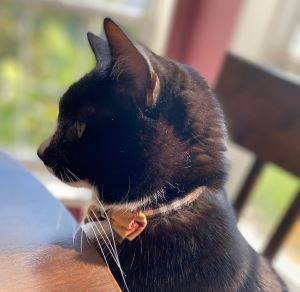

Experience

So many things to experience!
Programming Experience in:
SQL, Python, JavaScript, Java, C++, C, HTML, CSS, php, Go
Skills:
Data Analytics, Product Management, Database, Google Analytics, Looker Studio, Excel, Data Visualization, PivotTables, PowerBI, Market Analysis, Cross-Functional Collaboration, Project Management, Microsoft Word, Figma, Presentation Skills, Communication, Customer Service, Cats, Friendship Bracelets, Just Dance, E-Commerce, Gaming
Projects
Work
- Zoetis - IT Commercial Intern | June 2024 - August 2024
- Managed databases and established a centralized system to gauge the performance of customer-facing sites, enhancing data accessibility and compliance
- Implemented methods to improve B2C experiences using Google Analytics and LookerStudio, leading to more informed decision-making and enhanced customer satisfaction
- Reduced the total number of websites by 60%, set the stage to expand efforts to global
- Zoetis - IT Commercial Intern | May 2023 - August 2024
- Analyzed the performance of the ZoetisUS website based on KPIs such as number of sessions and bounce rate and market research Analyzed the performance of the ZoetisUS website based on KPIs such as number of sessions and bounce rate and market research
- Translated raw data into meaningful insights, forming comprehensive and actionable goals for cross-functional teams necessary to satisfy customer needs
- Documented and built action plans to address data challenges and gaps in commercial capabilities, improving data quality and operational efficiency
- NYU IT - Student Administrator | Oct 2021 - May 2023
- Increased productivity for all student administrative assistants by creating an updated centralized folder with access and instructions for all responsibilities and tasks
- Communicated effectively with managerial staff and external vendors, enhancing collaboration and project outcomes
- Combined functions of customer-related services into one application
- Skills: Communication, Google Sheets, Customer Service
Extracurricular
- NYU AFD - President
- Coordinate performances with other campus clubs promoting diversity and inclusion
- Played major role in reviving club Post-COVID by expanding outreach efforts and influencing membership size to triple within two years
- Handled all external communications and worked with fellow officers to coordinate performance opportunities and socials
- Pal o Mine Equestrian Center - Volunteer (Nov 2018 - Present)
- Provide assistance and ensure safety during hippotherapy lessons with clients of all ages.
- NYU Second Year Leadership Institute - Member (Sep-Dec 2022)
- Coordinated with second-year peers to gain leadership, team-building, and networking skills
Awards
- Dean's Undergraduate Research Fund - April 2023
- Received NYU CAS's Undergraduate research grant for upcoming work "Humans and Waste: Forging a Connection with the Assistance of AI"
- NYU CAS Presidential Honors Scholar
- Top 10% Incoming CAS Class of 2025